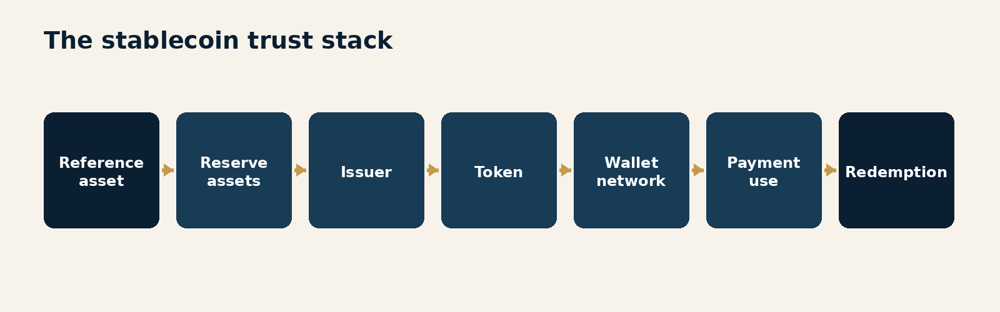
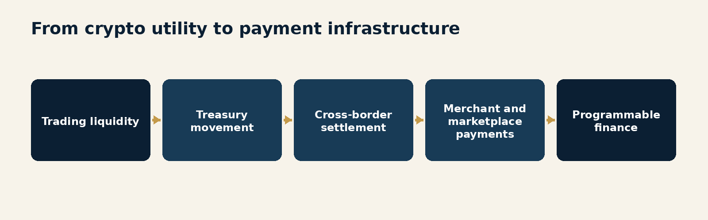
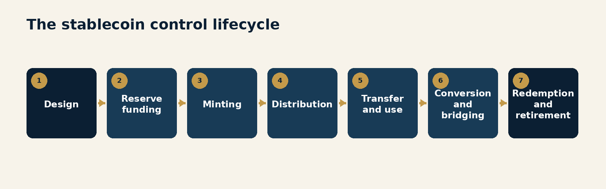
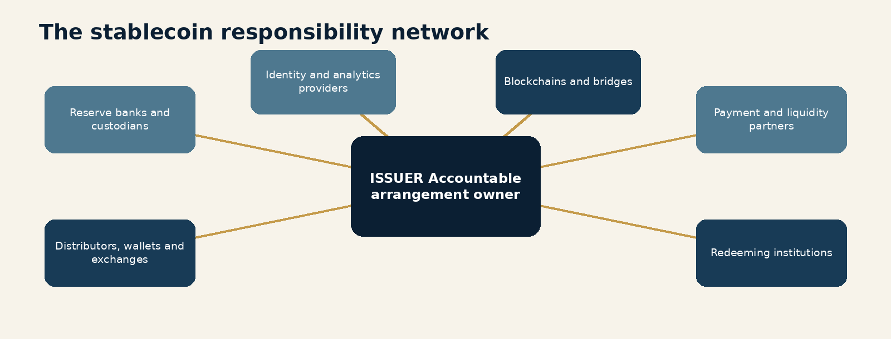
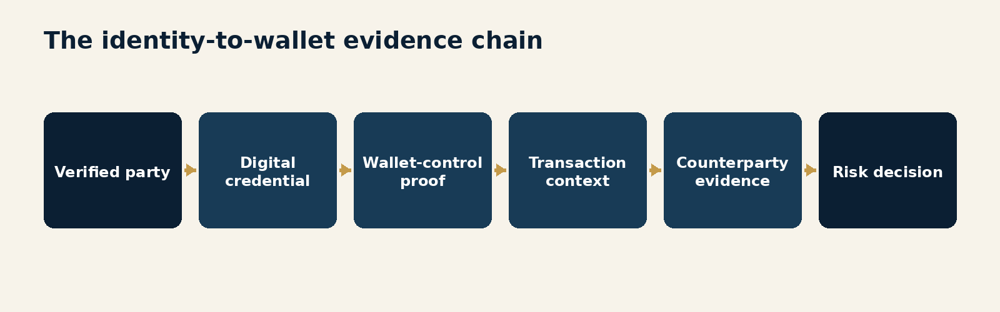
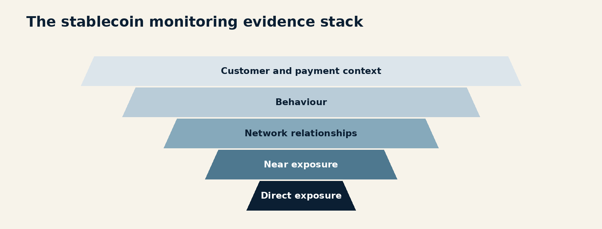
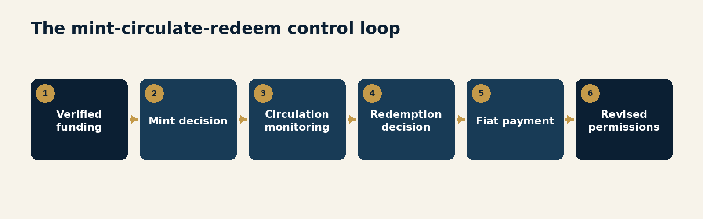
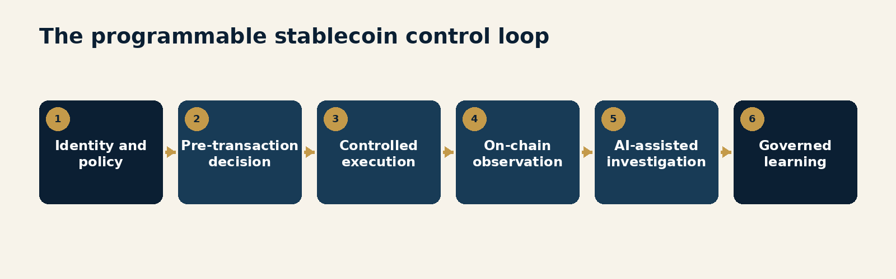
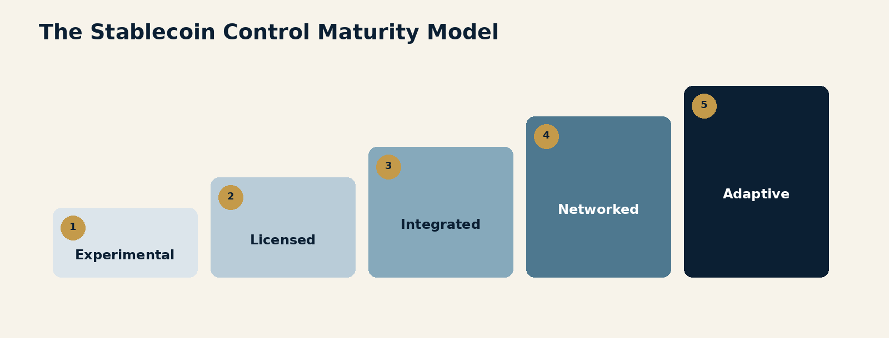

Foreword
Stablecoins have acquired an impressive collection of descriptions.
They are digital dollars, tokenised cash, settlement assets, crypto infrastructure, payment instruments, reserve-backed liabilities and, depending on the conference panel, either the future of money or the final sign that finance has run out of ordinary nouns.
The terminology matters, but the operating reality matters more.
A stablecoin can be issued by one entity, backed by assets held with another, distributed by several exchanges, stored in hosted or self-controlled wallets, transferred across public blockchains, moved through bridges, used inside smart contracts and redeemed through a narrow group of approved counterparties. The token may be visible on a ledger while the real people, legal entities and commercial purposes behind the activity remain scattered across different institutions.
That is not disintermediation. It is intermediation with the furniture rearranged.
For compliance leaders, this distinction is fundamental. Stablecoins do not make traditional financial-crime obligations disappear. They change where the relevant information sits, when decisions must be made and which participant has the technical power to intervene.
The speed is obvious. A token can move around the clock, cross borders without a correspondent-banking chain and settle according to code. The harder question is whether identity, sanctions controls, fraud intelligence, transaction monitoring and accountability can move with it.
Regulators are answering that question in increasingly direct terms. The United States enacted the GENIUS Act in July 2025 and is implementing a federal framework for permitted payment stablecoin issuers. The European Union's MiCA rules for asset-referenced and e-money tokens have applied since June 2024. Hong Kong's licensing regime for fiat-referenced stablecoin issuers took effect in August 2025. The United Kingdom published final stablecoin issuance rules in June 2026 as part of a wider cryptoasset regime. International bodies continue to press for consistent oversight of arrangements that are global by design.
The financial-crime risk has also become clearer. FATF's March 2026 report on stablecoins and unhosted wallets highlighted the attraction of stablecoins to money launderers, terrorist financiers, scammers and state-linked cyber actors. Its July 2026 update warned that most identified on-chain illicit activity now involves stablecoins and that implementation of global standards remains uneven.
The answer is not to treat every wallet as suspicious, every public blockchain as ungovernable or every stablecoin product as a bank account wearing a hoodie.
The answer is to design controls around the real lifecycle of the money.
This volume develops that argument. It examines the shift from crypto utility to payment infrastructure, the expanding compliance perimeter, the division of responsibility across a stablecoin arrangement, the challenge of preserving identity, the opportunity and limits of blockchain analytics, the control significance of redemption and the role of programmable and AI-enabled controls.
The central proposition is simple:
Stablecoins can move trust at the speed of money only when compliance is embedded across the network, not attached at the edge.
Introduction
Money Without a Closing Time
Traditional payment systems contain boundaries that stablecoins challenge.
Banks have operating days. Payment schemes have cut-off times. Correspondent chains have identifiable participants. Accounts have legal owners. Messages travel through defined networks. Settlement and reconciliation may be separated, but the institution usually knows which ledger is authoritative and which party is responsible for correcting an error.
Stablecoins replace several of those boundaries with a token that can move continuously across programmable infrastructure.
This creates genuine opportunity. A business can receive value outside local banking hours. Treasury balances can move between entities without waiting for a correspondent chain. A marketplace can automate settlement. Cross-border payments can become faster and more transparent. A payment and the conditions governing it can operate on the same technical rail.
It also creates a different control problem.
The token does not carry a complete customer file. A wallet address is not a verified identity. A public ledger records activity without necessarily explaining purpose. A transaction can be irreversible at the blockchain layer even when the issuer retains the ability to freeze an address. A stablecoin may be native to one chain and represented on another through a bridge or wrapped token. The same unit of value can move between regulated intermediaries and peer-to-peer environments in minutes.
Stablecoins can make compliance more capable
These characteristics do not merely create new risks. Public ledgers can provide persistent evidence before and after an institution's direct interaction, revealing connected-wallet exposure beyond any one company's records. When combined with verified identity, minting and redemption data, this can support better decisions earlier. Programmability can also screen, constrain or route selected activity before or during execution - provided the code is governed as rigorously as the policy. The opportunity is not less compliance. It is more timely, informed and precise compliance.
The industry often discusses stablecoin compliance as an issuer question: who may mint the token, what reserves must be held, how holders redeem and which AML obligations apply.
Those questions are essential. They are not sufficient.
The stablecoin lifecycle raises at least seven distinct control questions:
Who is authorised to issue, mint, distribute and redeem?
What assets support the promise of par value and rapid redemption?
Which parties are known at each point in the lifecycle?
What information travels when value moves between wallets or providers?
How are sanctions, fraud and AML risks assessed before and after transfer?
Who can freeze, reject, recover, burn or reissue tokens?
How does the arrangement learn from incidents and change its controls?
These questions do not belong to one function. They connect product design, legal analysis, licensing, treasury, reserve management, cybersecurity, fraud, sanctions, AML, blockchain engineering, data governance, customer operations and third-party oversight.
That is why stablecoins belong within the Adaptive Compliance series.
Adaptive compliance begins with the recognition that controls operate inside changing systems. The risk changes as customers adopt new uses, tokens move to new chains, wallet technology evolves, distribution partners change and criminals test the seams between participants. A static approval performed before launch cannot govern that environment indefinitely.
The operating model must continuously connect four forms of evidence:
Identity: who controls the relevant person, entity, wallet, account or software agent;
Activity: what happened on-chain and through the surrounding fiat and product systems;
Purpose: why the value is moving and whether the behaviour is consistent with that purpose; and
Authority: which participant can intervene, on what legal and technical basis, and with what consequences.

None of these controls is perfect.
Identity credentials can be stolen. Blockchain attribution is probabilistic. Sanctions exposure can emerge after a transfer. A smart contract can execute exactly as written and still produce a disastrous outcome. Reserve disclosures can be technically accurate but operationally unhelpful during stress.
The objective is not perfect knowledge. It is sufficient, explainable and timely confidence.
This volume therefore treats the stablecoin not as an isolated digital asset but as a payment arrangement. It follows the token from issuance through circulation and back to redemption. It asks where information is created, where it is lost, which decisions can be automated and which responsibilities cannot be outsourced.
Stablecoins remove the closing time. Compliance has to remove the assumption that tomorrow morning is soon enough.
Stablecoins Are Payment Infrastructure Now
The strategic mistake is to govern a payment rail as though it were still a laboratory experiment.
EXECUTIVE INSIGHT: Stablecoins have moved from the edge of crypto markets toward the centre of payment strategy. Compliance should evaluate the function they perform, not the label attached to them.
The product escaped the pilot
Stablecoins began largely as a practical answer to a crypto-market problem. Traders needed a less volatile asset that could remain inside digital-asset venues, move between platforms and settle without returning to the banking system after every transaction.
That origin still shapes how many institutions think about them.
Stablecoins are placed in the crypto workstream, discussed by a specialist committee and surrounded by language suggesting that wider use remains somewhere in the future. Meanwhile, businesses are exploring them for treasury movement, supplier payments, marketplace settlement, remittances, merchant acceptance, collateral and twenty-four-hour liquidity.
The regulatory response reflects that shift. MiCA created specific rules for asset-referenced and e-money tokens. Hong Kong established a licensing regime for fiat-referenced stablecoin issuers. The United States enacted a framework for payment stablecoins through the GENIUS Act. The United Kingdom's developing framework explicitly addresses issuance, backing assets, redemption and custody.
Different jurisdictions use different legal categories, but the direction is consistent: stablecoins are being governed according to the financial functions they perform.
Compliance programmes should do the same.
A stable value is a promise, not a property
The word stable can create false comfort.
A fiat-referenced token is stable because an arrangement is designed to maintain its value. That arrangement depends on assets, legal rights, operational processes, market liquidity, technology, governance and confidence.
The token itself does not know whether the reserve is sufficient. The blockchain does not verify that redemption requests will be processed promptly. A smart contract can confirm that one token moved from Wallet A to Wallet B, but not that a bank holding reserve assets will open on Monday morning feeling cooperative.
Stability therefore has several layers:
Value stability: the market price remains close to the reference asset.
Reserve stability: the backing assets retain value and liquidity.
Redemption stability: eligible holders can convert the token at par within the promised time.
Operational stability: minting, burning, custody and transfers remain available and secure.
Legal stability: holders' rights survive insolvency, disputes and cross-border complexity.
Control stability: the arrangement can manage fraud, sanctions and illicit-finance events without improvising under pressure.
An arrangement can perform well in one layer and fail in another. A token can trade at par while retail holders lack direct redemption. Reserves can be high quality while operational access to them is delayed. Controls can identify an illicit wallet after funds have crossed to a chain where intervention is harder.
The label stablecoin compresses those differences into one reassuring word.
Compliance should decompress them.
The same token can perform different functions
Risk depends on use.
A stablecoin used as collateral inside a regulated trading platform is not the same product as the same token used for retail payments through self-controlled wallets. A token held briefly for cross-border settlement creates different risks from one marketed as a long-term store of value. A closed-loop arrangement among verified institutions differs from open circulation on public networks.
The risk assessment should define:
who may acquire the token;
who may transfer it;
whether unhosted wallets are permitted;
which blockchains and bridges are supported;
how holders enter and leave the arrangement;
whether direct redemption is available;
whether smart contracts or software agents may initiate transfers; and
which jurisdictions, customer types and payment purposes are expected.
Without these answers, the phrase stablecoin product is too broad to support a serious control design.
Payments change the tolerance for ambiguity
A speculative asset can tolerate some market friction. A payment instrument cannot tolerate uncertainty about whether one dollar is worth one dollar, whether a recipient can use the funds or whether an innocent customer will be frozen for reasons nobody can explain.
Payments create expectations of availability, finality and fairness. They also create operational scale. Controls that work for a small group of institutional users may collapse when applied to millions of retail transfers. Manual review is not a strategy when the network operates continuously.
This changes the performance question.
The programme cannot be measured only by whether the token maintained its peg or whether an issuer met its licensing conditions. Leaders should also ask:
Did legitimate payments complete when expected?
Were high-risk transfers identified early enough to matter?
Could the organisation explain freezes, rejections and redemption delays?
Did fraud victims have a practical route to assistance?
Did new chains or distributors change the risk profile?
Did incidents produce changes in permissions, analytics or product design?
Stablecoin compliance is therefore both a safety function and a service capability.
The control implication
The first governance change is simple: move stablecoins out of the permanent pilot category.
This does not mean every institution should issue or support them. It means decisions should be based on an operating model capable of assessing a live payment arrangement.
The governance forum should include compliance, payments, treasury, technology, risk, legal, finance, cybersecurity and customer operations. The product approval should define measurable conditions rather than broad assurances. The risk assessment should be refreshed when material usage, chains, partners or customer groups change.
The product may be new. The obligation to understand how money moves is not.

Common failure modes
Treating stablecoins as a technology project with a compliance appendix.
Assuming a fiat reference makes the token equivalent to a bank deposit.
Approving a token without defining the intended payment uses.
Using the issuer's licence as a substitute for product due diligence.
Measuring adoption without measuring control capacity.
Keeping the product in pilot governance after customers have made it operationally important.
Questions for Leaders
What economic function does each supported stablecoin perform for our customers?
Which assumptions from the original pilot no longer describe current use?
What would make the product material to our liquidity, sanctions, fraud or AML risk?
Which change in chain, wallet access or distribution would require renewed approval?
Can our operations support customer and control decisions outside banking hours?
The Compliance Perimeter Is the Lifecycle
The control perimeter begins before minting and continues after the token leaves the issuer's direct customer relationship.
EXECUTIVE INSIGHT: A stablecoin arrangement is only as strong as the least governed transition between issuance, distribution, transfer, conversion and redemption.
Follow the value
Traditional compliance programmes frequently organise controls around legal entities.
One entity conducts KYC. Another processes payments. A third holds assets. Governance follows the corporate chart because accountability, licensing and audit naturally attach to regulated institutions.
Stablecoins require an additional view: the lifecycle of the value.
A token can be minted for an approved institutional customer, transferred to an exchange, withdrawn to an unhosted wallet, bridged to another blockchain, deposited into a smart contract, received by a marketplace seller and later redeemed through a different intermediary.
No single participant necessarily sees the whole sequence.
If the risk assessment stops at the issuer's direct customer, it describes the entrance to the arrangement rather than the arrangement itself.
Seven control stages
The stablecoin lifecycle can be understood through seven stages.
1. Design
The issuer defines the token, reference asset, supported chains, redemption promise, contractual rights, transfer controls and governance. Compliance decisions are embedded here whether compliance attends the meeting or receives a cheerful summary afterwards.
Design determines whether addresses can be frozen, whether transfers can be paused, how upgrades occur, whether tokens can be reissued and how sanctioned or stolen assets are handled.
2. Reserve funding
Fiat or other eligible assets enter the reserve structure. This stage connects customer funds, banking partners, custodians, treasury operations and the legal segregation of assets.
Controls should address source of funds, concentration, liquidity, reconciliation, asset eligibility and access during stress.
3. Minting
New tokens are created and delivered to an approved wallet or intermediary. Minting is not merely a technical transaction. It creates a liability, expands the circulating supply and establishes the first on-chain holder.
The control decision should connect the customer, funding source, destination wallet, chain, amount, purpose and authority to mint.
4. Distribution
Tokens move through exchanges, wallets, payment providers, marketplaces and liquidity partners. Distribution expands access and can quickly change the risk profile.
A well-controlled issuer can still become exposed through a distributor with weak onboarding, poor Travel Rule implementation or an enthusiasm for growth that has outrun its staffing plan.
5. Transfer and use
Tokens circulate through hosted and unhosted wallets, smart contracts, merchants, bridges and decentralised applications. This is where on-chain visibility is greatest and off-chain certainty may be weakest.
The control objective moves from knowing every holder to understanding exposure, behaviour, counterparties and risk indicators with sufficient confidence.
6. Conversion and bridging
The stablecoin may be exchanged for another token, wrapped on another network or transferred through a bridge. These activities can fragment visibility and reduce the effectiveness of issuer controls.
FATF's 2026 stablecoin report specifically highlighted cross-chain activity as a control challenge. Treasury's 2026 report similarly noted that cross-chain tracing relies on complex heuristics and may reduce confidence.
7. Redemption and retirement
Tokens return for fiat, are burned, frozen, abandoned or remain dormant. Redemption can reveal information not visible during circulation, including the identity of the party seeking conversion and the relationship between on-chain activity and the traditional financial system.
It is both a liquidity event and a compliance event.

Control the transitions
Many failures occur between stages rather than within them.
The minting process may be controlled, but the approved customer may distribute tokens to unknown sub-clients. A wallet provider may screen transfers, but the bridge used by the customer may not preserve the same information. An issuer may freeze a sanctioned address on one chain while an equivalent token representation continues to move elsewhere.
These are transition risks.
For each transition, leaders should define:
the sending and receiving participant;
the information available to each;
the control decision required;
the legal and technical authority to act;
the expected timing;
the evidence retained; and
the response when information is missing.
This creates a lifecycle control map rather than a collection of institutional policies.
Open networks require selective control
An open blockchain cannot be governed as though every participant signed the same programme manual.
The practical response is to define where the institution has control, where it has influence and where it has only visibility.
Control exists where the institution can approve, reject, freeze, limit or terminate.
Influence exists where contractual standards, partner due diligence, technical integration or commercial leverage can shape behaviour.
Visibility exists where the institution can observe activity and use it to change risk decisions, even if it cannot stop the transfer directly.
Confusing these categories produces weak governance. An organisation may claim to control activity that it can only observe. It may also fail to use information simply because it cannot intervene on-chain.
Visibility still matters. It can change future minting, redemption, customer access, wallet permissions, suspicious-activity reporting, law-enforcement engagement and partner relationships.
The perimeter is dynamic
The lifecycle changes over time.
New networks are added. Liquidity migrates. Distribution partners introduce new wallet types. Smart contracts create pooled or automated uses. A token designed for wholesale settlement becomes popular with retail users. An initially closed arrangement becomes increasingly open.
The risk assessment should therefore include triggers for reassessment:
a new blockchain, bridge or token representation;
a new country or customer segment;
material growth in unhosted-wallet interaction;
concentration in a distributor or liquidity provider;
new smart-contract integrations;
changes to direct redemption;
material depegging or liquidity stress;
emerging sanctions, fraud or money-laundering typologies; and
a change in the issuer's intervention capability.
An annual review may capture some of these eventually. The blockchain will not wait politely.
Common failure modes
Defining the perimeter by legal entity rather than value lifecycle.
Performing due diligence on direct customers while ignoring downstream distribution.
Approving new chains as technical changes without control reassessment.
Assuming on-chain visibility equals authority to intervene.
Treating bridging as a routing detail.
Failing to use redemption data to improve monitoring of circulation.
Questions for Leaders
Can we map a token from reserve funding to final redemption?
At which transitions do identity, purpose or Travel Rule information disappear?
Where do we have control, influence or visibility?
Which partner or technical dependency creates the largest unmanaged transition risk?
What event automatically triggers a fresh stablecoin risk assessment?
The Issuer Is Not the Whole System
Stablecoin risk is produced by an arrangement, but accountability still has to belong to identifiable people and institutions.
EXECUTIVE INSIGHT: Licensing the issuer is necessary. Governing the network requires clear responsibility across every material function that makes issuance, circulation and redemption possible.
A network of specialists
The phrase stablecoin issuer suggests a single institution operating a single product.
In practice, the arrangement may depend on:
banks holding cash deposits;
custodians safeguarding securities;
asset managers investing reserve assets;
blockchain developers maintaining the token contract;
administrators controlling minting and burning keys;
exchanges and brokers distributing the token;
wallet providers serving holders;
market makers supporting liquidity;
analytics providers attributing addresses;
identity providers verifying customers;
bridges moving value between networks; and
payment companies converting tokens into commercial use.
This specialisation can improve capability. It can also divide information and accountability so thoroughly that everyone is responsible for a piece and nobody is responsible for the outcome.
The FSB's global stablecoin recommendations address the arrangement as a whole and call for comprehensive governance, risk management and clear lines of responsibility. That framing is useful for institutions even when a specific token is not globally systemic.
The control question is not simply, "Is the issuer regulated?"
It is, "Who performs each critical function, what standard applies and who is accountable when the function fails?"
Responsibility should follow capability
Different participants possess different forms of control.
The issuer may be able to mint, burn and freeze. A wallet provider knows its customer and controls access to an interface. An exchange can restrict trading and withdrawals. A reserve custodian controls access to backing assets. A bank sees fiat funding and redemption flows. A blockchain analytics provider supplies attribution and exposure data but cannot make the institution's risk decision.
Responsibilities should follow these capabilities.
An issuer should not pretend to know every peer-to-peer holder. A wallet provider should not assume that the issuer's address controls replace customer due diligence. A bank should not treat reserve accounts as ordinary commercial deposits without understanding the operational and liquidity model. An analytics vendor should not become the invisible author of sanctions policy through a risk score nobody can explain.
Clear allocation avoids two familiar mistakes:
Duplication without coverage: several participants screen the same direct party while nobody investigates downstream relationships.
Reliance without evidence: each participant assumes another has performed a control without receiving the data, assurance or outcome needed to rely on it.
Build a responsibility map
For each critical function, the operating model should identify:
the accountable institution;
the responsible team;
supporting providers;
the legal or contractual basis;
the control objective;
the evidence produced;
the escalation path; and
the continuity plan.
Material functions include:
product and chain approval;
customer and distributor onboarding;
reserve funding and custody;
minting and burning;
wallet screening and behavioural monitoring;
Travel Rule information exchange;
sanctions-list updates and address restrictions;
fraud response and customer assistance;
redemption;
suspicious-activity investigation and reporting;
law-enforcement response;
cybersecurity and key management; and
incident recovery.

Third-party oversight must reach the service
Stablecoin arrangements are often technology intensive, which can make third-party oversight strangely administrative.
The institution collects policies, certifications, financial statements and audit reports. The package is complete. The service may still fail at the precise moment the institution needs it.
Effective oversight should test the service in the context of the control.
For a blockchain analytics provider, leaders should understand:
chain and asset coverage;
attribution sources and confidence;
treatment of indirect exposure;
cross-chain methodology;
update frequency;
model and heuristic changes;
alert delivery and outage handling;
evidence available to investigators; and
performance against known cases.
For a wallet or distribution partner, testing should address onboarding quality, sanctions controls, Travel Rule exchange, unhosted-wallet treatment, suspicious-activity escalation and the ability to restrict activity.
For reserve partners, testing should include reconciliation, asset eligibility, legal segregation, intraday access, stress liquidity and the authority to execute emergency instructions.
The test should answer whether the control works, not whether the contract contains an encouraging paragraph about it.
Governance needs an arrangement owner
Cross-functional committees are necessary, but committees do not become accountable merely because their minutes use the word ownership.
A material stablecoin programme should have an executive owner for the arrangement. That person does not perform every control. The owner ensures that the complete system has:
an approved risk appetite;
defined legal entities and jurisdictions;
clear control ownership;
current product and chain inventories;
consolidated incidents and metrics;
a coordinated change process;
recovery and exit plans; and
decisions escalated to the right governing body.
The compliance function should retain independent challenge. It should not become the default owner of every operational gap simply because the gap contains risk.
Stablecoin governance is strongest when compliance defines the required outcomes, product and technology design the mechanisms, operations proves they work and independent assurance tests the evidence.
Cross-border rules make coordination a control
Stablecoins can circulate globally while legal obligations remain jurisdictional.
An issuer may be licensed in one market, distributed through entities in several others and used by customers whose activity touches still more. Rules may differ on reserve composition, redemption, marketing, custody, Travel Rule implementation, unhosted wallets, sanctions and regulatory reporting.
The result is not merely a legal inventory problem. It is an operating-model problem.
The arrangement needs a process to determine which requirements apply to each activity, which entity performs the control and how information reaches the responsible team.
This is particularly important during incidents. A freeze request, cyber compromise, depegging event or sanctions designation can activate legal, operational and reporting duties in several jurisdictions at once.
The network may run on code. The response still runs on people who need to know whom to call.
Common failure modes
Treating issuer authorisation as proof that the full arrangement is controlled.
Outsourcing a control without defining the evidence required for reliance.
Allowing vendors' risk scores to become policy decisions.
Governing third parties through documents rather than service testing.
Creating a cross-functional committee without an accountable arrangement owner.
Discovering during an incident that contractual rights and technical capability do not align.
Questions for Leaders
Who is accountable for the stablecoin arrangement as a whole?
Which material control depends on a provider we have never tested end to end?
Where are multiple parties performing the same task while another risk remains uncovered?
Can we explain the methodology behind every external risk score used in a decision?
Who coordinates a cross-border freeze, redemption or cyber incident outside local business hours?
Identity Must Survive the Wallet
A wallet address is useful evidence. It is not a legal name, a customer relationship or an explanation of purpose.
EXECUTIVE INSIGHT: Stablecoin controls become effective when verified identity, wallet control and transaction context can be connected without pretending that any one of them is complete.
The address is not the person
A blockchain records addresses.
Compliance obligations generally concern people, legal entities, beneficial owners, counterparties and activity. The core identity problem is therefore a binding problem: how confidently can the organisation connect an address to the party controlling it at the relevant time?
For a hosted wallet, a regulated provider may know the customer. For an unhosted wallet, the user controls the keys directly or through software. For a smart contract, the immediate address may represent code, a pool of assets or a service used by many participants. For an agent-initiated payment, the address may be controlled by software acting under a person's or company's authority.
The same address can also change meaning over time. Control can be transferred. Keys can be compromised. A wallet may be shared. A smart contract can be upgraded. An address attributed to one service today may behave differently tomorrow.
Identity should therefore be treated as a confidence statement, not a permanent label.
Four identity questions
For each material transfer, the control should distinguish four questions:
Who is the legal party? The person or entity to which rights, obligations and accountability attach.
Who controls the wallet? The party capable of authorising the transaction.
Who benefits economically? The ultimate recipient or beneficiary of the value.
Who initiated the instruction? The human, institution, smart contract or software agent that caused the transfer.
These answers may be the same. They may not.
A corporate treasury wallet may be legally owned by a company, operated by a service provider, controlled through multi-signature approval and used to pay suppliers. A marketplace wallet may receive value for many underlying sellers. A smart contract may route funds according to rules established by developers but activated by users.
If the data model has only one customer field, it will force these different roles into a single answer and create false certainty.
Travel Rule information is necessary but not complete
FATF's Travel Rule requires relevant virtual-asset service providers and financial institutions to obtain, hold and transmit specified originator and beneficiary information.
This is an essential control. It creates a channel for identity information to travel alongside value even when that information is not written onto a public blockchain.
Implementation remains uneven. Providers operate in jurisdictions with different timelines, thresholds and technical arrangements. Information may arrive through separate messaging networks. Transfers involving unhosted wallets may lack a regulated counterparty from which to obtain the data.
The Travel Rule should therefore be integrated into the transaction decision, not treated as a reporting file that arrives somewhere nearby.
Controls should identify:
whether required information was received;
the provider that supplied it;
whether the provider has been risk assessed;
whether names and identifiers match other evidence;
whether the beneficiary wallet is consistent with the stated party;
what action follows missing or contradictory information; and
how repeated failures affect the counterparty relationship.
Receiving data is not the same as believing it.
Unhosted wallets require graduated evidence
An unhosted wallet is not automatically illicit. It does, however, remove a regulated intermediary from one side of the transfer.
The risk response should be proportionate to product, customer, jurisdiction, amount, behaviour and exposure.
Evidence of wallet control may include:
a cryptographic signature;
a small verification transfer;
an authenticated connection to the wallet;
transaction history consistent with the customer;
documentary or contractual evidence;
counterparty information supplied by the customer; and
verifiable digital credentials.
The institution should define when simple proof of control is sufficient and when it needs stronger evidence of ownership, purpose or ultimate beneficiary.
A cryptographic signature proves control of a key. It does not prove that the controller is using their own identity, that the funds are legitimate or that the wallet has only one user.
This is the stablecoin version of a familiar KYC lesson: a document can be genuine and the story can still be false.

Digital identity can reduce the gap
Treasury's March 2026 report identified digital identity as a promising tool for countering illicit finance involving digital assets. Portable credentials can allow a trusted party to attest to verified facts without forcing every participant to collect the same documents.
This creates important possibilities:
a wallet can prove that its controller passed a defined level of verification;
a user can disclose jurisdiction or eligibility without publishing full identity data on-chain;
a credential can be revoked when identity or authority changes;
a smart contract can check for an approved credential before executing; and
institutions can connect on-chain activity with off-chain customer evidence.
The governance challenge is substantial.
Leaders must assess the credential issuer, assurance level, revocation process, privacy model, interoperability, audit trail and legal acceptance. A beautifully cryptographic credential from an unreliable issuer is simply a forged letter wearing better shoes.
Identity systems must also avoid creating a permanent public map of people's financial lives. Privacy-preserving methods, selective disclosure and off-chain storage should be designed into the arrangement.
Agents add another identity layer
AI agents and other software can increasingly initiate economic activity.
An agent may select a supplier, call a payment API, interact with a smart contract and move stablecoins within approved limits. The blockchain records the signing address. The control environment must also know the principal on whose behalf the agent acts and the policy under which the action was authorised.
Agent-initiated transfers should capture:
the principal;
the agent or service identity;
the authority granted;
applicable limits and prohibited uses;
the model or software version;
the evidence used in the decision;
any human approval or override; and
the final outcome.
Without that information, the organisation may know which key signed the transaction and still be unable to explain who decided to pay.
Common failure modes
Treating an address attribution as permanent verified identity.
Collapsing legal owner, wallet controller, beneficiary and initiator into one field.
Receiving Travel Rule information without testing consistency or reliability.
Applying one policy to every unhosted-wallet transfer.
Confusing proof of key control with proof of legitimate ownership.
Allowing an agent to initiate value without recording its principal and authority.
Questions for Leaders
Which identity roles can our current data model represent?
What evidence do we require to bind a customer to an unhosted wallet?
How do missing or inconsistent Travel Rule data affect the transaction decision?
Can a customer challenge an incorrect wallet attribution?
How will we identify the principal behind an agent-initiated stablecoin payment?
Monitoring Meets a Public Ledger
The ledger is transparent. The activity is not automatically understood.
EXECUTIVE INSIGHT: Blockchain analytics changes the evidence available to compliance, but effective monitoring still requires identity, product context, uncertainty management and accountable decisions.
Visibility is the opportunity
Traditional transaction monitoring sees activity recorded by the institution.
Public blockchains can expose a much broader transaction history. Investigators may trace funds before they reached the customer, observe where they moved afterwards, identify clusters of related addresses and detect interaction with known services or illicit actors.
This is a profound shift.
The institution no longer has to treat every incoming transfer as though it began at the immediate counterparty. It can assess exposure across a longer path. It can observe structuring, rapid pass-through behaviour, peel chains, chain hopping and interaction with services that would otherwise remain hidden.
The ledger also preserves evidence. Transactions do not disappear because a customer closed an account or an intermediary failed to answer an information request.
But transparency is not the same as interpretation.
Attribution is probabilistic
Blockchain analytics providers combine public transaction data with proprietary attribution, clustering, threat intelligence, open-source information and heuristics.
Treasury's 2026 report described core capabilities including address attribution, clustering, tracing, monitoring and counterparty risk scoring. It also stressed that the tools supplement rather than replace other AML and sanctions controls.
That caution matters.
An address may be attributed with high confidence because a service published it. A cluster may be inferred from transaction behaviour. Indirect exposure may be calculated across several hops. Cross-chain tracing may rely on assumptions about timing, amounts and bridge behaviour.
These conclusions do not carry the same evidentiary weight.
The control should retain:
the source of the attribution;
the confidence level;
the date and version;
the number and type of transaction hops;
the treatment of mixers, bridges and pooled services;
corroborating off-chain information; and
the reason the evidence justified the action taken.
A single risk score is operationally convenient. It can also conceal every important judgement that produced it.
Stablecoins create payment-like patterns at network scale
Stablecoin monitoring should not simply import crypto-market typologies.
As payment use grows, institutions will see payroll, supplier settlement, treasury transfers, merchant receipts, remittances, marketplace collections and refunds. These patterns can resemble high-velocity or many-to-one activity traditionally associated with laundering.
The system must distinguish legitimate payment networks from illicit ones.
That requires product context:
expected counterparties;
customer business model;
payment purpose;
geographic footprint;
wallet type;
distribution structure;
normal timing and velocity;
relationship between on-chain value and fiat flows; and
whether activity is conducted for the customer or underlying users.
The best monitoring signal is often not a suspicious pattern in isolation. It is an inconsistency between observed activity and the approved purpose.
Risk should be assessed at several distances
On-chain exposure can be organised into layers.
Direct exposure involves a transfer to or from a known high-risk address.
Near exposure involves activity within a limited number of hops, adjusted for service type, timing, value and intervening transactions.
Network exposure examines broader relationships, repeated counterparties, clusters and common funding or exit points.
Behavioural exposure focuses on patterns such as rapid dispersal, chain hopping, bridge use, dormancy followed by sudden activity or repeated interaction with high-risk services.
Contextual exposure connects the on-chain pattern with the customer, product, device, fiat movement and stated purpose.

No one layer should dominate every decision.
A direct sanctions hit may justify immediate restriction. A low-confidence multi-hop exposure may justify enhanced monitoring rather than rejection. A network pattern that is normal for a payment processor may be highly unusual for a small consulting company.
Proportionality is not softness. It is control precision.
Monitoring has four clocks
Stablecoin monitoring cannot operate on one timetable. Blockchain settlement can be rapid and irreversible. Controls should therefore distinguish:
pre-transaction screening, assessing addresses, counterparties, product permissions and immediate exposure before execution;
in-flight control, where technical design allows a transfer to be delayed, rejected or routed for review;
post-transaction monitoring, identifying wider patterns, emerging attribution and downstream movement; and
retrospective rescreening, reassessing prior activity when addresses, services or typologies are newly identified.
Retrospective analysis is particularly important. An address that appeared ordinary at the time of transfer may later be linked to a fraud network, sanctioned actor or cyber incident.
The organisation should define how new intelligence affects open accounts, supported wallets, past transactions, reports and future permissions.
Investigations need reproducible evidence
On-chain investigations can become screenshot collections.
An investigator opens a vendor tool, follows a graph, captures several images and writes a narrative. The conclusion may be sound. Reproducing it months later can be difficult if the attribution, interface or underlying data changes.
The case record should capture structured evidence:
addresses and transaction hashes;
chains and assets;
timestamps and values;
attribution source and version;
exposure methodology;
relevant off-chain evidence;
investigator judgement;
action and legal basis;
review or override; and
final outcome.
Treasury noted the lack of uniform standards for recording and presenting blockchain-analytics evidence. Institutions should not wait for the perfect industry standard before making their own decisions reproducible.
Model governance belongs here
Blockchain analytics uses models and heuristics even when vendors describe the product as data.
Coverage changes. Clustering logic changes. New chains are added. Attribution can be corrected. Risk weights can shift. A model may perform well on one asset and poorly on another.
Governance should therefore assess:
intended use;
data and chain coverage;
performance and limitations;
confidence calibration;
change management;
false-positive and false-negative evidence;
override patterns;
vendor concentration;
resilience and fallback; and
continuing fitness for the institution's use cases.
The public ledger is permanent. The interpretation layer is not.
Common failure modes
Treating blockchain transparency as complete customer understanding.
Using one vendor score without preserving the underlying evidence.
Applying investment-platform typologies to payment activity without context.
Screening only the immediate address.
Ignoring changes in attribution after the transaction.
Storing investigations as screenshots that cannot be reproduced.
Excluding analytics heuristics from model governance.
Questions for Leaders
Can we distinguish verified attribution from inferred clustering?
Which chains, bridges or tokens have materially weaker analytics coverage?
How does customer purpose change the interpretation of an on-chain pattern?
What happens when an address is newly identified after we processed the transfer?
Can an independent reviewer reproduce an investigator's conclusion?
Redemption Is a Compliance Event
The promise to return value at par connects reserve management, customer rights, financial crime and operational resilience.
EXECUTIVE INSIGHT: A stablecoin is not controlled only when it is transferred. Minting and redemption reveal the relationship between the token, the customer and the traditional financial system.
The peg depends on an exit
A fiat-backed stablecoin promises more than a price.
It promises that eligible holders can exchange the token for a fixed amount of the reference currency according to defined terms. Confidence in that promise supports secondary-market trading near par. If redemption becomes uncertain, the token's stability can weaken even when the nominal value of reserve assets appears sufficient.
The BIS has emphasised that redemption frictions are common and that the design of reserves, liquidity and access to backstops affects whether a stablecoin can function as money rather than an investment instrument.
Compliance leaders may reasonably ask why this belongs in their remit.
Because redemption determines who can leave the arrangement, how quickly, with what evidence and through which institution. It also creates one of the strongest opportunities to connect on-chain activity with verified identity and fiat settlement.
Reserve integrity and financial-crime integrity meet
Reserve management is usually framed through asset quality, segregation, liquidity, reconciliation and disclosure.
Financial-crime controls add another dimension.
The institution should understand:
the source of reserve funding;
the customer and wallet associated with each mint;
the bank accounts used for subscriptions and redemptions;
whether third parties may fund or receive proceeds;
the relationship between circulating supply and reserve movement;
whether sanctioned or restricted parties can obtain economic benefit;
how frozen tokens are treated in reserve calculations; and
how suspicious activity affects redemption.
A stablecoin can be fully backed and still be used for illicit finance. It can also have strong AML controls and fail during a liquidity shock.
Trust requires both.
Minting and redemption are high-information moments
Peer-to-peer transfers may involve addresses with limited identity information.
Minting and redemption generally involve access to the issuer or an approved intermediary. Funds enter from or leave through the traditional financial system. Customer, bank-account and transaction information can be collected and compared.
These moments should be treated as control checkpoints.
At minting, the institution can assess:
the verified customer;
source of funds;
funding account;
destination wallet and proof of control;
amount, purpose and expected use;
supported chain;
sanctions and fraud indicators; and
consistency with prior activity.
At redemption, it can assess:
the requesting party;
source wallet and token history;
beneficiary bank account;
intervening services and exposure;
rapid mint-transfer-redeem cycles;
third-party redemption;
pressure, fraud or account compromise indicators; and
restrictions, reports or investigative holds.
This does not mean every redemption becomes an investigation. It means the transaction is designed to use information that may be unavailable elsewhere in the lifecycle.

Direct and indirect redemption matter
Many stablecoin holders do not redeem directly with the issuer. They sell through exchanges, brokers, market makers or other intermediaries.
This creates a tiered redemption structure.
Direct customers may have contractual rights and established onboarding. Indirect holders may depend on secondary-market liquidity and the willingness of approved intermediaries to convert. During stress, that distinction can become material.
The operating model should define:
who has a direct redemption right;
minimum amounts, fees and timing;
treatment of retail and indirect holders;
access during market stress;
reliance on market makers;
priority and sequencing of requests;
customer communications;
treatment of frozen or disputed tokens; and
escalation when redemption activity is suspicious.
The phrase redeemable at par is incomplete without the answers.
Freezing is not the same as recovery
Centralised issuers may retain the technical ability to freeze specified addresses or block transfers. This capability can support sanctions compliance, fraud response and law-enforcement action.
It also creates difficult decisions.
Who may request a freeze? What evidence is required? Does the legal authority apply in every relevant jurisdiction? Can tokens be burned and reissued to a victim? How are good-faith downstream holders treated? What happens if an address is identified incorrectly? Can bridged or wrapped representations be controlled in the same way?
FATF's 2026 work highlights both the value of freezing and the risk of stablecoins or technical arrangements designed to resist it.
The institution needs a documented intervention model:
Reject: prevent a mint, transfer or redemption before execution.
Freeze: disable movement from specified addresses where technically and legally permitted.
Hold: delay an off-chain operational step while evidence is assessed.
Burn and reissue: extinguish and replace tokens under defined authority.
Restrict: remove access to future minting, redemption or supported services.
Report and refer: preserve evidence and engage the appropriate authority.
These actions are not interchangeable. Each requires a legal basis, technical capability, approval path, audit trail and customer-response process.
Liquidity stress is also a control stress
During a run or depegging event, transaction volumes rise, customer behaviour changes and operational pressure intensifies.
High-risk actors may attempt to exit quickly. Fraudsters may exploit confusion. Sanctioned parties may use intermediaries. Operations teams may be tempted to simplify checks to clear volume or, in the opposite direction, block activity too broadly.
The stress plan should therefore combine liquidity and financial-crime scenarios.
It should test:
surge capacity for minting and redemption reviews;
availability of blockchain analytics and sanctions screening;
reserve access and bank operating hours;
decision authority outside normal governance windows;
customer and regulator communications;
false-positive impact during emergency thresholds;
preservation of case evidence; and
recovery after systems or partners fail.
The stablecoin may trade twenty-four hours a day. Reserve assets and partner banks may remain committed to the old-fashioned concept of bedtime.
Common failure modes
Treating redemption as a treasury process rather than a customer and compliance decision.
Knowing reserve value without linking minting to verified funding.
Assuming all holders have the same redemption rights.
Equating a technical freeze with legal recovery.
Designing controls for normal volume only.
Separating liquidity stress testing from fraud, sanctions and AML response.
Questions for Leaders
What information do minting and redemption provide that circulation does not?
Who can redeem directly, and what happens to everyone else during stress?
What is our legal and technical authority to freeze, burn or reissue?
Can we connect every mint and redemption to the relevant customer, wallet and fiat account?
Have we tested financial-crime controls during a rapid redemption scenario?
Programmability Changes the Control
When money can execute code, policy can move closer to the transaction - and software can create risks at the same speed.
EXECUTIVE INSIGHT: Programmable compliance is valuable when it converts approved policy into controlled action. It is dangerous when code silently becomes policy.
Control can move into the transaction
Stablecoins operate on programmable networks.
This makes it possible to apply controls at or near the point of execution. A wallet can restrict destinations. A smart contract can require a verified credential. A token contract can freeze specified addresses. An API can evaluate sanctions and behavioural risk before minting. A treasury agent can operate within amount, purpose and counterparty limits.
Traditional compliance systems often observe the transaction after it has been created. Programmability allows selected policies to shape what can be created.
Examples include:
approved-wallet lists for institutional settlement;
jurisdiction or customer eligibility credentials;
transaction and velocity limits;
multi-signature approval for high-risk activity;
time-based restrictions;
automatic rejection of sanctioned addresses;
smart-contract allowlists;
purpose-specific token or wallet permissions;
circuit breakers during cyber or liquidity events; and
automatic capture of decision evidence.
These mechanisms can reduce risk and operational delay.
They can also create a new category of control failure: the policy may be reasonable, but the code may implement it incorrectly.
Code is an execution layer, not a governance system
A smart contract does not understand legal intent.
It evaluates conditions. If those conditions are incomplete, outdated or badly designed, the contract can consistently produce the wrong result with admirable efficiency.
Programmable controls therefore need the same governance as other material controls:
approved policy objective;
accountable owner;
documented logic;
secure development and testing;
data and oracle governance;
change approval;
monitoring and exception handling;
fallback and recovery;
independent validation; and
evidence of effectiveness.
The organisation should be able to translate code into an intelligible policy statement and translate the policy back into tested code.
If only developers understand the control, governance is incomplete. If only compliance understands the policy, implementation is incomplete.
Oracles and external data create hidden dependencies
Programmable controls often depend on information outside the blockchain.
An oracle may supply price data. An identity service may confirm eligibility. A sanctions service may flag an address. A risk engine may provide a score. A bridge may attest that assets were locked on another network.
Each input can fail, become stale, be manipulated or change methodology.
The control design should define:
authoritative source;
update frequency;
confidence and error handling;
response to disagreement between sources;
outage behaviour;
security and authentication;
versioning;
auditability; and
authority to override.
Fail-open and fail-closed decisions require particular care.
If a sanctions service is unavailable, stopping all transfers may protect against prohibited activity but create severe customer and liquidity consequences. Allowing all transfers preserves service but may create legal exposure. The correct response may vary by transaction type, customer, jurisdiction and duration of the outage.
This decision should be made during design, not by whoever happens to answer the incident call.
AI can assemble evidence and detect change
Treasury's 2026 report highlighted AI, digital identity, blockchain analytics and APIs as technologies with potential to strengthen illicit-finance detection.
AI can help stablecoin compliance by:
linking on-chain and off-chain entities;
prioritising alerts using customer and network context;
identifying emerging transaction patterns;
summarising complex movement across wallets and chains;
comparing activity with stated purpose;
detecting changes in distributor or customer behaviour;
proposing investigative steps;
drafting evidence-based case narratives; and
identifying where data quality reduces confidence.
The strongest use is not replacing judgement. It is assembling evidence quickly enough for judgement to matter.
The model should distinguish what it knows from what it infers. It should cite the transactions, customer records, rules and intelligence supporting its conclusion. It should show uncertainty and alternatives.
An eloquent answer without evidence remains a guess, even if the font is reassuring.
Agents will both use and defend the rail
AI agents may initiate stablecoin payments, interact with smart contracts and manage treasury or purchasing activity.
This creates a dual challenge.
Compliance systems may use agents to investigate and intervene. Customers and criminals may use agents to transact, probe controls, generate identities, exploit contracts or fragment activity.
Agent governance should address:
machine identity;
human or legal principal;
delegated authority;
transaction limits;
approved counterparties and purposes;
model and tool permissions;
credential and key security;
logging;
human escalation; and
revocation.
Controls should assume that agents can act faster and more persistently than humans. A bad actor no longer has to test a threshold manually when software can conduct the research.
The defensive response is not autonomous blocking everywhere. It is governed automation matched to the speed and reversibility of the decision.

Model authority should be graduated
AI and programmable controls should have levels of authority.
Observe: identify and organise evidence.
Recommend: propose a risk classification or action.
Constrain: apply low-impact limits within approved policy.
Intervene: reject, freeze or hold under defined conditions.
Adapt: modify parameters or permissions based on validated outcomes.
Higher authority requires stronger evidence, validation, resilience, monitoring and review.
The organisation should define which actions require human approval, which can occur automatically and which are prohibited.
This is especially important for freezes and redemptions, where errors can affect customer access to money and create legal consequences.
Common failure modes
Treating smart-contract logic as self-validating because it is transparent.
Allowing code changes to bypass policy governance.
Relying on an oracle without defined outage behaviour.
Giving AI a risk score without requiring evidence or uncertainty.
Allowing agents to transact without machine identity and delegated authority.
Automating high-impact actions before proving lower-authority uses.
Questions for Leaders
Which policies are currently enforced through code?
Can compliance and audit understand the implemented logic?
What happens when an identity, analytics or sanctions data source fails?
Which decisions may AI recommend, constrain or execute?
Can we revoke an agent's payment authority immediately and prove that we did?
Trust at the Speed of Money
The mature organisation connects product design, identity, monitoring, redemption and learning into one accountable system.
EXECUTIVE INSIGHT: Stablecoin leadership will not be defined by who launches fastest. It will be defined by who can scale trust without slowing the product back into the system it was designed to improve.
Regulation creates a floor
Stablecoin regulation is becoming more concrete.
The United States has enacted the GENIUS Act and is developing detailed rules for permitted payment stablecoin issuers, including AML and sanctions obligations. MiCA establishes requirements for relevant issuers and service providers in the European Union. Hong Kong licenses fiat-referenced stablecoin issuers. The United Kingdom has set final issuance rules within a wider regime expected to take effect in 2027. Singapore has established the features of a framework focused on value stability and continues implementation work.
This progress matters.
It also risks creating a narrow compliance response: obtain the licence, meet reserve rules, publish disclosures and build the required AML programme.
Those are essential foundations. They do not guarantee an effective payment arrangement.
The FSB's 2025 peer review found significant gaps and inconsistencies in the implementation of global crypto and stablecoin recommendations. FATF's 2026 work similarly shows uneven implementation of virtual-asset standards.
Stablecoins move across those differences. A well-regulated token can circulate through weakly controlled services. A strong issuer can interact with an offshore provider. A Travel Rule message can arrive from a counterparty whose customer due diligence is unreliable.
The mature control system therefore uses regulation as a floor and network evidence as a continuing discipline.
The Stablecoin Control Maturity Model
Organisations can assess maturity across five stages.
Stage 1: Experimental
The stablecoin is governed as a limited pilot. Controls depend heavily on manual approval, narrow customer access and basic wallet screening.
Success is measured through launch milestones and the absence of incidents.
The principal risk is that usage expands while governance still assumes the pilot is small.
Stage 2: Licensed
The organisation establishes the required legal entities, reserve arrangements, policies, AML programme, sanctions controls and regulatory reporting.
Success is measured through authorisation, documented compliance and operational readiness.
The principal risk is treating the licence as proof that the full lifecycle is controlled.
Stage 3: Integrated
Customer identity, wallet evidence, fiat flows, on-chain activity, Travel Rule data, reserve operations and case outcomes are connected.
Controls operate across minting, circulation and redemption.
Success is measured through data quality, attribution, decision timeliness and end-to-end control coverage.
Stage 4: Networked
The organisation governs distributors, wallets, exchanges, analytics providers, reserve partners and supported chains as one arrangement.
Information-sharing, partner standards, cross-border coordination and incident response operate continuously.
Success is measured through network coverage, partner performance, resilience and coordinated intervention.
Stage 5: Adaptive
Outcomes change permissions, product design, monitoring, agent authority and partner relationships.
The organisation detects new typologies, model drift, chain migration and customer-behaviour changes early enough to act.
Success is measured through learning speed, prevented harm, customer trust and the quality of strategic decisions.

Maturity must be assessed by flow
An organisation may be mature in one stablecoin flow and experimental in another.
Institutional treasury transfers among verified wallets may be tightly integrated. Retail transfers to unhosted wallets may rely on limited identity evidence. Minting may be automated while redemption remains operationally manual. One blockchain may have strong analytics coverage while another has sparse attribution and frequent bridge use.
Leaders should assess each material flow against:
customer and use case;
issuer and token;
chain and bridge;
wallet type;
distribution partner;
minting and redemption route;
applicable jurisdiction;
available identity and transaction evidence;
intervention capability; and
measured outcomes.
The goal is appropriate maturity, not maximum technology.
Not every transfer needs a digital credential, three analytics vendors and an AI agent composing a small novel about it.
The level of control should match the risk, speed, scale and reversibility of the activity.
The operating model joins five disciplines
Stablecoin trust depends on five connected disciplines.
1. Product governance
Define permitted uses, customers, jurisdictions, chains, wallets, contracts, agents and limits before activity begins.
2. Information governance
Connect identity, wallet, Travel Rule, on-chain, fiat, reserve and outcome data with clear lineage, confidence and retention.
3. Decision governance
Define which actions can be automated, which require human review, who can freeze or restrict and how customers can challenge errors.
4. Network governance
Set standards for issuers, banks, custodians, distributors, wallet providers, analytics services, bridges and other material participants.
5. Learning governance
Use incidents, investigations, model performance, customer outcomes, regulatory change and new typologies to improve the system.
These disciplines should meet in one executive view of the arrangement.
Measure trust, not activity
Traditional dashboards can produce impressive quantities of operational data: wallets screened, alerts generated, cases closed, addresses blocked and policies reviewed.
Those measures do not show whether the arrangement is becoming safer.
An executive stablecoin scorecard should include:
verified identity coverage at minting and redemption;
wallet-control evidence by use case;
Travel Rule completeness and counterparty quality;
supported-chain analytics coverage;
direct and indirect high-risk exposure;
time from new attribution to customer and wallet action;
fraud losses and recoveries;
freezes, errors, appeals and reversals;
redemption timing in normal and stressed conditions;
reserve and supply reconciliation;
partner control failures;
outages and fallback performance;
time from confirmed typology to control change; and
customer impact.
The strategic question is not, "How many controls did we run?"
It is, "Did our controls preserve trust while the money moved?"
Start with one flow
The transformation does not require every stablecoin question to be solved before work begins.
Leaders can start with one material flow:
map the lifecycle from funding to redemption;
identify the parties, data and decisions at each stage;
classify control, influence and visibility;
find the three largest information or authority gaps;
move one decision to the earliest safe point;
define an outcome measure;
test the complete flow during an incident; and
use the result to change the next version.
That is adaptive compliance applied to programmable money.
Stablecoins promise value that moves continuously, across borders and through software. The institutions that succeed will not be those that eliminate friction indiscriminately. They will be those that distinguish unnecessary friction from necessary trust.
Trust must move at the speed of money.
Common failure modes
Treating regulatory authorisation as the end of control design.
Applying one maturity score to every stablecoin flow.
Measuring screening and alert volume instead of prevented harm and customer outcomes.
Separating reserve, product, AML, sanctions and fraud governance.
Learning from incidents without changing product permissions or network relationships.
Scaling faster than the organisation can explain its decisions.
Questions for Leaders
At what maturity stage is each material stablecoin flow?
Which network participant creates the largest gap between control responsibility and capability?
Can we demonstrate that identity, monitoring and redemption operate as one system?
Which metric best shows whether trust improved?
How quickly does a confirmed case change what happens to the next transfer?
Toolkit
The Stablecoin Control Operating Model
This toolkit translates the volume's argument into five practical artefacts.
1. Stablecoin Lifecycle Inventory
For each material flow, document:
issuer, token and legal classification;
reference asset and reserve model;
customers and economic purpose;
funding and minting route;
supported chains and token contracts;
wallets, distributors and exchanges;
unhosted-wallet access;
bridges and wrapped representations;
smart-contract and agent use;
direct and indirect redemption;
fiat banking partners;
jurisdictions and entities;
control, influence and visibility; and
accountable owner.
2. Stablecoin Decision Record
For each material automated or assisted decision, capture:
customer, wallet and transaction identifiers;
legal party, wallet controller, beneficiary and initiator;
chain, token and smart contract;
Travel Rule information and provider;
on-chain attribution and confidence;
customer and payment context;
applicable rule, model and version;
decision and timing;
human review or override;
customer impact;
final investigative outcome; and
feedback applied.
3. Network Responsibility Map
For each critical function, retain:
accountable institution;
responsible team;
service providers and dependencies;
legal and contractual basis;
technical capability;
evidence received;
service levels;
escalation contact;
outage and fallback process;
independent testing; and
latest review date.
4. Stablecoin Incident Playbook
Prepare decision paths for:
Sanctions designation
identify addresses, customers and related exposure;
restrict activity within legal and technical authority;
rescreen historical transactions;
coordinate cross-chain and partner action;
preserve evidence;
report and communicate.
Fraud or cyber theft
validate compromise and affected keys;
trace and flag downstream movement;
determine freeze, burn or reissue authority;
coordinate with issuers, exchanges and law enforcement;
support affected customers;
learn from the attack path.
Depegging or redemption stress
activate liquidity and compliance surge teams;
monitor abnormal minting, transfers and redemption;
apply approved emergency thresholds;
maintain screening and case evidence;
communicate customer rights and timing;
restore normal controls deliberately.
Analytics or identity-provider outage
determine fail-open, fail-closed or risk-tiered response;
restrict unsupported high-risk activity;
record deferred decisions;
reconcile when service returns;
assess customer and compliance impact.
5. Executive Stablecoin Scorecard
The scorecard should balance five categories.
Trust
price and redemption performance;
customer complaints and appeals;
freezes, reversals and incorrect restrictions;
availability and settlement success.
Identity and information
verified customer and wallet coverage;
Travel Rule completeness;
address-attribution confidence;
chain and bridge visibility;
data-quality incidents.
Financial crime
high-risk exposure;
confirmed suspicious-activity yield;
fraud losses, prevented loss and recovery;
sanctions interventions;
time from intelligence to restriction.
Resilience
reserve and supply reconciliation;
redemption performance under stress;
critical-provider availability;
fallback control coverage;
key and smart-contract incidents.
Learning
time from confirmed typology to control change;
model and heuristic drift;
partner remediation;
repeat incidents;
product and permission changes supported by outcome evidence.
References and Further Reading
1. United States Congress, Guiding and Establishing National Innovation for U.S. Stablecoins Act, Public Law 119-27, 18 July 2025. Official source
2. U.S. Department of the Treasury, Report to Congress on Innovative Technologies to Counter Illicit Finance Involving Digital Assets, March 2026. Official source
3. Financial Crimes Enforcement Network and Office of Foreign Assets Control, Permitted Payment Stablecoin Issuer AML/CFT and Sanctions Program Requirements, proposed rule, 10 April 2026. Official source
4. Financial Action Task Force, Targeted Report on Stablecoins and Unhosted Wallets - Peer-to-Peer Transactions, 3 March 2026. Official source
5. Financial Action Task Force, Targeted Update on Implementation of the FATF Standards on Virtual Assets and Virtual Asset Service Providers, July 2026. Official source
6. Financial Action Task Force, Best Practices in Travel Rule Supervision, 2025. Official source
7. European Union, Regulation (EU) 2023/1114 on Markets in Crypto-assets, 31 May 2023. Official source
8. European Commission, Digital Finance: MiCA and DORA Application, 19 December 2024. Official source
9. European Banking Authority, Report on Tackling ML/TF Risks in Crypto-asset Services Through Supervision, October 2025. Official source
10. Financial Conduct Authority, PS26/10: Stablecoin Issuance, 25 June 2026. Official source
11. Hong Kong Monetary Authority, Regulatory Regime for Stablecoin Issuers, effective 1 August 2025. Official source
12. Hong Kong Monetary Authority, AML/CFT-related Information for Licensed Stablecoin Issuers, 29 July 2025. Official source
13. Monetary Authority of Singapore, MAS Finalises Stablecoin Regulatory Framework, 15 August 2023. Official source
14. Financial Stability Board, High-level Recommendations for the Regulation, Supervision and Oversight of Global Stablecoin Arrangements, 17 July 2023. Official source
15. Financial Stability Board, Thematic Peer Review on the FSB Global Regulatory Framework for Crypto-asset Activities, 16 October 2025. Official source
16. Bank for International Settlements, Anchoring Trust in Money: Innovation Beyond Stablecoins, Annual Economic Report 2026, Chapter III. Official source
17. Committee on Payments and Market Infrastructures and International Organization of Securities Commissions, Considerations for the Use of Stablecoin Arrangements in Systemically Important Payment Systems, July 2022. Official source
18. U.S. Department of the Treasury, 2026 National Money Laundering Risk Assessment, March 2026. Official source
About the Author
Micheal Sheehy is a global financial-services and payments compliance executive with experience leading large-scale transformation across anti-money laundering, sanctions, customer lifecycle management, fraud, transaction monitoring, data, technology and model governance.
His work focuses on the future of adaptive compliance: how financial institutions can combine better information, modern technology, accountable governance and organisational learning to improve control effectiveness while enabling responsible growth.
He is the author of The Adaptive Compliance Series.
Contact: micheal@michealsheehy.com
Website: michealsheehy.com
Continue the conversation. For speaking, media or advisory enquiries, contact Micheal.